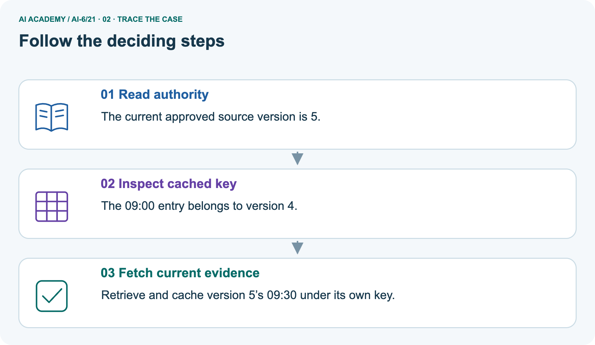
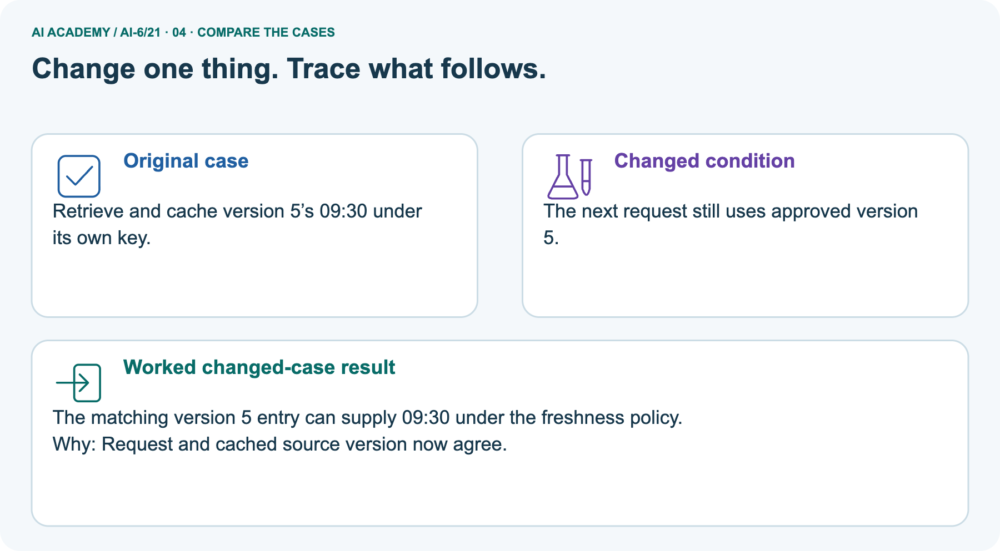
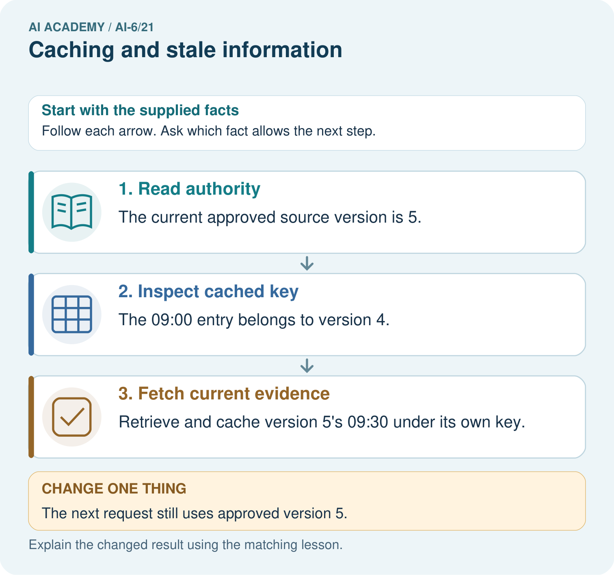
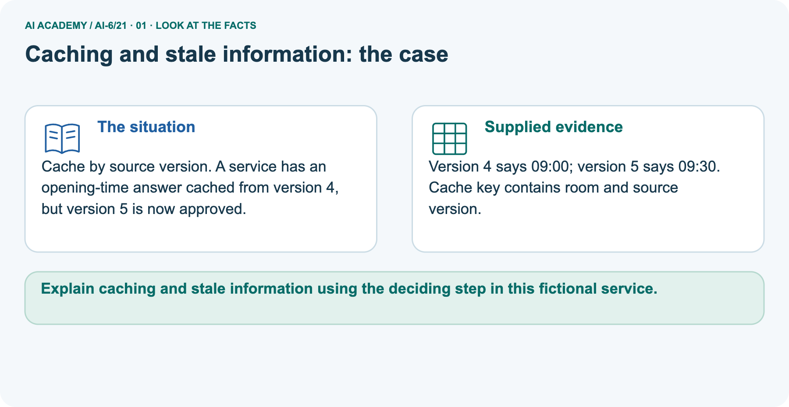
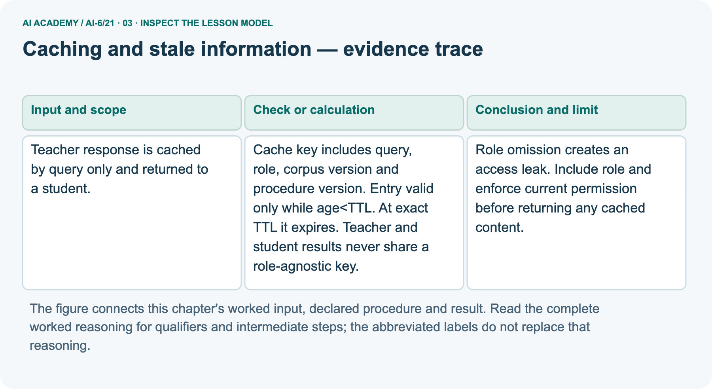
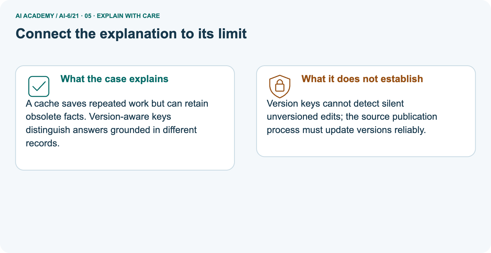
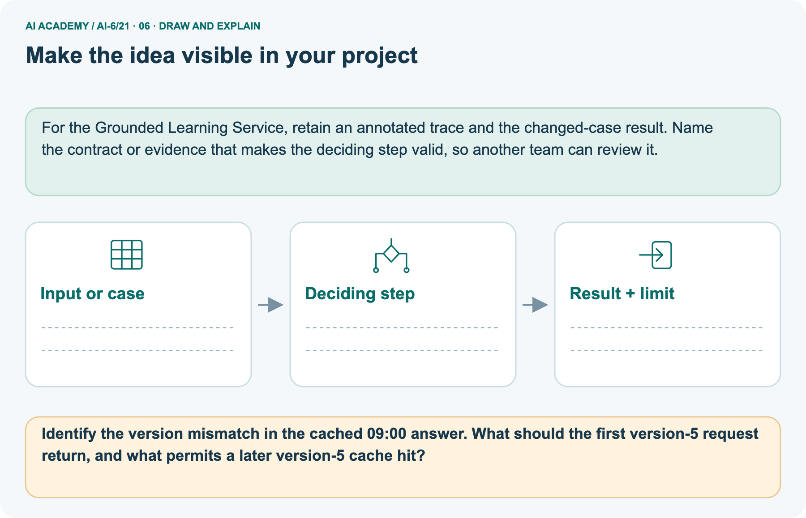

AI Academy · Level 6 · Grade 11 · Week 21 · Student lesson
Caching and stale information
Learn to understand, design, build, test and explain AI systems responsibly.
Project: Grounded Learning Service
THE CONNECTED WEEK
Check permission. Match context. Check age.
Explain why a young saved answer can still be wrong for the current request.
Keep one habit: Complete contract → main decision ledger → versioned opening-time picture → boundary probes → local cache audit → independent version change.
Main lesson · Section 1
Reuse an answer only while its context still matches
A saved answer needs current permission, matching versions and a valid age.
Learning goals
I can explain the mechanism and terminology of caching and stale information.
I can apply the stated procedure to a new case with a traceable result.
I can identify an assumption or limitation and design a revealing follow-up.
Retrieve access and retention distinctions
Close your notes first. A rough first answer helps us choose the right starting point; it is not a score for your ability.
Without opening the old lesson, explain one key idea from Data retention and deletion. Give an example and a mistake that the idea helps you avoid.
Without opening the old lesson, explain one key idea from Untrusted input boundaries. Give an example and a mistake that the idea helps you avoid.
Without opening the old lesson, explain one key idea from Approval gates and idempotency. Give an example and a mistake that the idea helps you avoid.
After trying, check the relevant lesson or ask your teacher. Change the part of your explanation that the evidence shows was wrong.
Prerequisite and starting response
Recall Data retention and deletion. Explain why a recorded result needs its input conditions and evidence source before it can support a claim.
End goal
Explain caching and stale information using the deciding step in this fictional service.
Earlier wording, alternatives and picture transcripts
Your learning target
Remember before reading
This week you will practise:
Explain the mechanism and terminology of caching and stale information
Apply the stated procedure to a new case with a traceable result
Identify an assumption or limitation and design a revealing follow-up
Retrieve what you already know
This week’s end goal
Main lesson · Section 2
Separate permission, matching context and freshness
Passing one check does not excuse a failure in another.
Begin with a saved opening-time note
A cache is a saved result that can avoid repeating work. Think of keeping yesterday’s opening-time note: it is useful only if you are allowed to read it and it still belongs to the approved information. A young entry can still be wrong for this request. Check current permission first, then match the query, trusted role, source collection version and procedure version, then check the entry’s age.
Define the mechanism
Caching reuses results but needs freshness and access-aware keys. A cached answer must not cross role or corpus-version boundaries.
Complete access-aware cache contract
| Check | Complete classroom rule |
|---|---|
| Current permission | Trusted Boolean fixture checked before any cached value is returned |
| Cache key | Query, trusted role, corpus version and procedure version |
| Trusted role | Student or teacher supplied by the harness; not a request-body claim |
| Age and TTL units | Virtual minutes; age = now minus saved time |
| Freshness | 0 ≤ age < TTL; exact equality expires |
| Missing or changed context | Miss: do not return a differently keyed entry |
| Miss is not an answer | Only an authorized lookup of approved evidence can supply a replacement |
| Scope | Role-only separation is sufficient only for these fixtures; real user, tenant or object differences need appropriate additional scope |
| What TTL cannot prove | Truth, current permission, correct publication versions or physical deletion |
Name supplied and missing evidence
Earlier wording, alternatives and picture transcripts
Begin by writing the question the procedure is intended to answer. Identify the information already supplied, the information it will produce and the information still missing.
These are constructed classroom examples; they do not require live accounts, private records or an external service. Do not treat a plausible explanation as a measured outcome.
Main lesson · Section 3
Trace a young entry that still must not be served
Every expected result states which check decides it.
Original four-part key and strict age rule
Cache key includes query, role, corpus version and procedure version. Entry valid only while age<TTL. At exact TTL it expires. Teacher and student results never share a role-agnostic key.
Complete main fixture decision ledger
| Main fixture: TTL 5 minutes | Request at virtual minute | Expected result and reason |
|---|---|---|
| Teacher c1/p1 entry saved at 0; teacher c1/p1 allowed | 4 | Hit; matching key and age 4 < 5 |
| Same query, student c1/p1 allowed | 4 | Miss; teacher entry has a different role key |
| Teacher c1/p1 permission revoked | 4 | Denied before cached content is returned |
| Teacher c1/p1 allowed | 5 | Expired miss; age equals TTL |
| Teacher c2/p1 allowed | 1 | Miss; corpus version changed despite young age |
| Teacher c1/p2 allowed | 1 | Miss; procedure version changed despite young age |
State time units and current context
Before applying the procedure, write its units, denominator or decision boundary where relevant. A partner should be able to repeat each step using the same inputs.
If a required input is absent or violates the stated contract, record that condition explicitly instead of quietly replacing it with a convenient value.
Explain the visual
Point to the input, the deciding step and the result in this week’s visual. Explain the same step in ordinary words. A picture helps when you can say what each part represents.
Earlier wording, alternatives and picture transcripts
Caching and stale information — evidence trace
Connect the picture and the explanation
Main lesson · Section 4
Predict before revealing a matching-version cache hit
Hold role and procedure fixed while changing the source-version match.
Current task and response
Teacher response is cached by query only and returned to a student. Show the intermediate steps and give the conclusion with its scope.
Predict the next approved-version request
Change: The next request still uses approved version 5.
Check after predicting
Prediction: The matching version 5 entry can supply 09:30 under the freshness policy.
Reason: Request and cached source version now agree.
Earlier wording, alternatives and picture transcripts
Compare a familiar case with a changed case
Change one thing in the pictured case
Main lesson · Section 6
Read the old-version miss and the later fresh matching hit
A version match is necessary but does not replace current permission or freshness.
Main query-only cache leak and repair
Teacher response is cached by query only and returned to a student.
Role omission creates an access leak. Include role and enforce current permission before returning any cached content.
Compare the intermediate evidence with the final statement. Explain why each number or decision follows from the stated inputs.
The conclusion belongs to this scenario and procedure; changing the inputs, evaluation population or authority can change what it establishes. Retain the raw record so a later revision can be compared honestly.
Separate opening-time inputs and complete context
Cache by source version. A service has an opening-time answer cached from version 4, but version 5 is now approved.
Version 4 says 09:00; version 5 says 09:30. Cache key contains room and source version.
The picture simplifies the key to room and source version while holding the trusted role and procedure fixed. Approved version 5 says 09:30; the saved version 4 entry says 09:00. The first version 5 request must miss that old key even if the entry is young. Its authorized local fixture lookup supplies 09:30 and saves a separate version 5 entry.
A later request may hit that entry only while permission still applies and its age remains below TTL. Reliable publication must change the version when evidence changes; a silent edit under the same version is invisible to these key and age checks.
Trace approved version 5 rather than saved version 4



Read the picture one step at a time
A cache saves repeated work but can retain obsolete facts. Version-aware keys distinguish answers grounded in different records.
Predict the next matching-version request
Change one thing: The next request still uses approved version 5. Predict the result before checking the explanation. What remains the same?
Check after predicting



Explain silent-edit limits and first/later requests
Version keys cannot detect silent unversioned edits; the source publication process must update versions reliably.
Read the labelled picture: Identify the version mismatch in the cached 09:00 answer. What should the first version 5 request return, and what permits a later version 5 cache hit?
Earlier wording, alternatives and picture transcripts
Optional local lab: predict the printed result before running this standalone Python 3 example. Change one relevant boundary input, record the outcome and state the contract or statistical assumptions.
The program uses fictional values and the Python standard library; it performs no external operations.
def cache_key(query, role, corpus_version, procedure_version):
return (query, role, corpus_version, procedure_version)
def cache_valid(age, ttl, saved_version, current_version):
return 0 <= age < ttl and saved_version == current_version
print(cache_valid(10, 10, "v1", "v1"))Learn from the worked case
Cover the result before checking it. Say what is given, choose the procedure, and follow one step at a time. Then uncover the result and explain your first mismatch. Ask why a step is allowed, not only what number it produces.
A pictorial worked case: Caching and stale information
The facts we will use



Why this result follows
What this example does not establish
Main lesson · Section 7
Audit stale information, access leaks and overclaims separately
Cache eligibility does not establish correctness or deletion.
Core qualification and failure analysis
A cached result retains the limitations of its original evidence and can become stale independently of TTL.
A useful check asks what would make the reasoning fail. Distinguish a failure to execute the declared procedure from a weakness in the procedure itself.
The first may require a correction; the second requires an explicitly revised method and new evidence. Preserve unsuccessful cases so an improved result cannot hide the original problem.
Complete context, boundary and publication probes
| Probe | Expected interpretation |
|---|---|
| Age just below TTL with matching context and permission | May serve the saved authorized value; no new truth guarantee |
| Age exactly TTL or above | Miss; expired |
| Negative age | Miss; inconsistent supplied timestamps |
| NaN time or nonpositive TTL | Reject invalid fixture |
| Permission changes after saving | Denied even while entry is fresh |
| Role changes but query stays the same | Different key; never reuse the teacher-only value for a student |
| Corpus or procedure version changes | Different key; young old-version entry cannot satisfy it |
| Source changes without changing version | May go undetected; publication process must maintain versions |
| Expired entry still exists in dictionary | Not served, but not deleted; retention is a separate policy |
Guided repair and explanation
A report omits this qualification: A cached result retains the limitations of its original evidence and can become stale independently of TTL.
Explain how omitting it could change a reader's interpretation, and write an accurate replacement.
Earlier wording, alternatives and picture transcripts
Locate the earliest unsupported step
Main lesson · Section 8
Practise one changed condition at a time
Say which check fails first and what evidence remains unavailable.
Current explanation and guided check
Explain the weekly mechanism in your own words. Use the worked scenario to name its input, decision rule and output.
Supported W2 trace
Use workbook W2 for the connected example “Caching and stale information”. First fill the input and rule boxes. Try the middle steps before asking for a hint. After a hint, try the next step yourself.
| Plan | Do | Check |
|---|---|---|
| What is given? Which rule or procedure applies? | Record each intermediate step. | Does the result follow? What remains unknown? |
Explain your trace to a partner. Your partner points to one step to check. Swap roles on the next case. Each person writes their own explanation.
Individual scope check
Use the worked case for Caching and stale information. Proposed explanation: “The worked result establishes every future case”. Decide whether this explanation is supported.
Point to the step or supplied fact that decides; explain your repair if needed.
Answer on your own before discussion. If you are unsure, say which step you need help with.
Picture response
Identify the version mismatch in the cached 09:00 answer. What should the first version 5 request return, and what permits a later version 5 cache hit?
Reserve the selected version-change case
This is supported practice. Keep the separately named independent case for an attempt before feedback.
Earlier wording, alternatives and picture transcripts
Practise with less help: Trace the worked case
Check your reasoning
Explain the picture
Main lesson · Section 9
Run a complete local cache decision investigation
Inspect decision statuses and the approved source fixture lookup count.
Current query-only leak investigation
Teacher response is cached by query only and returned to a student. Show the intermediate steps and give the conclusion with its scope.
Runnable permission/version/age model
"""Local access-aware/versioned cache fixtures with virtual minute timestamps."""
from copy import deepcopy
from math import isfinite
def finite_nonnegative(value):
return type(value) in (int,float) and isfinite(value) and value>=0
def cache_key(query,role,corpus_version,procedure_version):
if any(type(v) is not str or not v for v in [query,role,corpus_version,procedure_version]):
raise ValueError('nonempty key fields required')
if role not in ('student','teacher'):raise ValueError('unknown trusted role fixture')
return query,role,corpus_version,procedure_version
class FixtureCache:
def __init__(self):self.entries={}
def put(self,query,role,corpus_version,procedure_version,value,saved_at):
if not finite_nonnegative(saved_at):raise ValueError('invalid virtual save time')
key=cache_key(query,role,corpus_version,procedure_version)
self.entries[key]={'saved_at':saved_at,'value':deepcopy(value)}
def get(self,query,role,corpus_version,procedure_version,now,ttl,*,currently_allowed):
if type(currently_allowed) is not bool:raise ValueError('trusted permission fixture required')
if not currently_allowed or role not in ('student','teacher'):
return {'status':'denied'}
if not finite_nonnegative(now) or not finite_nonnegative(ttl) or ttl<=0:
raise ValueError('finite nonnegative time and positive TTL required')
key=cache_key(query,role,corpus_version,procedure_version)
entry=self.entries.get(key)
if entry is None:return {'status':'miss','reason':'no matching context key'}
age=now-entry['saved_at']
if age<0:return {'status':'miss','reason':'invalid negative age'}
if age>=ttl:return {'status':'miss','reason':'expired'}
return {'status':'hit','age_minutes':age,'value':deepcopy(entry['value'])}
cache=FixtureCache();query='room information';ttl=5
cache.put(query,'teacher','c1','p1',{'answer':'fictional teacher-only detail'},0)
teacher_hit=cache.get(query,'teacher','c1','p1',4,ttl,currently_allowed=True)
student_miss=cache.get(query,'student','c1','p1',4,ttl,currently_allowed=True)
revoked=cache.get(query,'teacher','c1','p1',4,ttl,currently_allowed=False)
expired=cache.get(query,'teacher','c1','p1',5,ttl,currently_allowed=True)
assert teacher_hit['status']=='hit' and student_miss['status']=='miss'
assert revoked=={'status':'denied'} and expired=={'status':'miss','reason':'expired'}
assert cache.get(query,'teacher','c2','p1',1,ttl,currently_allowed=True)['status']=='miss'
assert cache.get(query,'teacher','c1','p2',1,ttl,currently_allowed=True)['status']=='miss'
print('Main role/current-permission/expiry results:',teacher_hit['status'],student_miss,revoked,expired)
# Separate pictured source versions; trusted publication context chooses current v5.
openings={'4':'09:00','5':'09:30'};current_version='5';lookups=[]
picture=FixtureCache();room='map-room opening'
picture.put(room,'student','4','p1',{'opening':'09:00','source_version':'4'},0)
first=picture.get(room,'student',current_version,'p1',1,ttl,currently_allowed=True)
assert first['status']=='miss'
lookups.append(current_version) # local source fixture lookup, not a network call
picture.put(room,'student',current_version,'p1',
{'opening':openings[current_version],'source_version':current_version},1)
next_request=picture.get(room,'student',current_version,'p1',2,ttl,currently_allowed=True)
assert next_request['status']=='hit' and next_request['value']['opening']=='09:30' and lookups==['5']
print('Picture current-version first miss:',first)
print('Picture later matching fresh hit:',next_request,'source fixture lookups:',lookups)
# Deliberate hypothetical publication fault: same version label, changed source value.
silent_edit={'5':'09:45'}
assert next_request['value']['opening']!=silent_edit['5']
print('A silent unversioned edit would not be detected by this matching key/TTL alone.')
print('Expired/mismatched entries may remain in memory; serving validity is not proof of retention deletion.')
print('Roles, permissions, approved versions and cached authorized values are supplied fixtures; no real authentication, clock, provider or distributed cache.')
Expected outcomes and limits
Predict each main status before running or tracing: teacher hit, student miss, revoked teacher denied, exact-age-5 expired miss, and changed corpus/procedure misses. In the separate opening-time picture, a version 5 request first misses, reads one local approved fixture, then a later request hits 09:30. The hypothetical silent edit demonstrates a publication limitation rather than a repaired cache.
Values are copied on save and return. The code supplies trusted roles and permissions; it implements no real login, network access, clock, distributed invalidation or retention deletion. Keep “not run” if you only trace it.
Evidence ledger, trace instructions and reflection
| Record | Your evidence |
|---|---|
| Given input and fixed rule | |
| Prediction before checking | |
| Actual result, or “not run” | |
| First mismatch and one explanation | |
| Boundary or missing input and expected response |
On paper, trace the supplied procedure. If code is provided, predict before running it in a local practice file. Never write an expected answer as though it were an observed run.
Before trying: what do I expect, and why? While trying: which step could first go wrong? Afterwards: what did I actually observe, and what should change? Keep “not run” if you only traced the procedure.
Earlier wording, alternatives and picture transcripts
Predict, investigate and preserve the evidence
def cache_key(query, role, corpus_version, procedure_version):
return (query, role, corpus_version, procedure_version)
def cache_valid(age, ttl, saved_version, current_version):
return 0 <= age < ttl and saved_version == current_version
print(cache_valid(10, 10, "v1", "v1"))Plan → try → check
Main lesson · Section 14
Try alone: combine a new TTL with a source-version change
Separate the reason age 9 fails from the expiry at ages 10 and 11.
Complete selected independent task
TTL 10 minutes; ages 9, 10, 11. Corpus version changes at age 9. Decide validity.
First attempt and support record
Attempt this case before feedback. Record any help. Earlier examples below are further practice; a case already practised with feedback cannot establish fresh transfer.
Feedback after trying
Attempt the independent case before hints. Record whether you worked alone, used a hint or followed a model. After feedback, fix the first unsupported step and explain why it changed.
A later check uses a changed case, not a copied answer.
Earlier wording, alternatives and picture transcripts
Independent case: Apply a new case independently
Attempt this without hints
TTL 10 minutes; ages 9, 10, 11. Corpus version changes at age 9. Decide validity.
Record support used: none, hint or teacher explanation. After feedback, a different case is needed to demonstrate independence.
Use feedback to improve
Main lesson · Section 11
Save context versions, timestamps and decision evidence
Use fictional values rather than private cached content in the classroom record.
Project task and artifact
Add a labelled caching and stale information evidence sheet to Grounded Learning Service. Show how you can explain the mechanism and terminology of caching and stale information.
Use the supplied fictional case and keep its inputs, intermediate steps, calculation or prediction, and limitation. Connect this record to last week’s record; a matching answer without a trace is insufficient.
| Project evidence | Record |
|---|---|
| Component and version | |
| Inputs permitted at prediction time | |
| Trace and comparison with earlier work | |
| Failure, limit and human review |
Actual run or trace and limitations
For the Grounded Learning Service, retain an annotated trace and the changed-case result. Name the contract or evidence that makes the deciding step valid, so another team can review it.
Earlier wording, alternatives and picture transcripts
Evidence for your project
Main lesson · Section 16
Explain why fresh does not always mean reusable
Name current permission, context and time before concluding.
Retrieve and explain
Close your notes. Explain this goal in your own words: Explain the mechanism and terminology of caching and stale information
Plan a changed-case return
If you are unsure, return to the worked picture and explain one arrow. If you are ready, change an input or assumption and justify your prediction.
Save your workbook evidence. At the next review, try a different case before opening your old answer.
Reference bank and extra practice
Choose the reference that helps your next step.
Reference · Use service vocabulary precisely
Reference · Section 5
Reference · Use service vocabulary precisely
Connect each term to an input, operation, evidence source or outcome.
Vocabulary and your explanation
| Word | Meaning |
|---|---|
| Cache key | Fields identifying a reusable result |
| TTL | The lifetime allowed by the cache contract |
| Invalidation | Marking an entry unusable after a relevant change |
Extra challenge · Explain a stronger case
Reference · Section 10
Extra challenge · Explain a stronger case
Choose the next challenge after the main route.
Explain,repair and extend
Explain the weekly mechanism in your own words. Use the worked scenario to name its input, decision rule and output.
A report omits this qualification: A cached result retains the limitations of its original evidence and can become stale independently of TTL.
Explain how omitting it could change a reader's interpretation, and write an accurate replacement.
For the worked scenario, propose one additional case that could reveal a failure, describe its expected outcome before running it, and explain what would need to remain fixed for a fair comparison.
Do not reuse W4 as a new final test after receiving feedback.
Explain → apply → challenge
Reference · Check the service reasoning and its limits
Reference · Section 12
Reference · Check the service reasoning and its limits
Use after practice; keep the selected independent case for its first attempt.
Current explanation and response
Complete the supported workbook tasks before attempting W4 independently. Record any hints or help used. After feedback, use the teacher's fresh retry rather than copying the earlier answer.
For a project, select a relevant new case, predict the outcome from the declared rule and preserve the result alongside any revision.
For the worked scenario, propose one additional case that could reveal a failure, describe its expected outcome before running it, and explain what would need to remain fixed for a fair comparison.
Do not reuse W4 as a new final test after receiving feedback.
Extra practice · Revisit the complete trace
Reference · Section 13
Extra practice · Revisit the complete trace
Predict before reading the supplied steps.
Complete trace and evidence
Complete evidence record
Caching and stale information — evidence trace
Follow the input through the stated procedure to its result. Cover the result first, predict it, then explain every intermediate step. The text/table accompanies the figure so the example can be read without colour.
Reference · The earlier route checklist
Reference · Section 15
Reference · The earlier route checklist
Use one main route rather than repeating the lesson.
Targets,route and first prediction
Start with this question: Cache by source version. A service has an opening-time answer cached from version 4, but version 5 is now approved.
| By the end, I can | How I will show it |
|---|---|
| Explain the mechanism and terminology of caching and stale information | Explain the deciding step, show a trace or test, and state one limit. |
| Apply the stated procedure to a new case with a traceable result | Explain the deciding step, show a trace or test, and state one limit. |
| Identify an assumption or limitation and design a revealing follow-up | Explain the deciding step, show a trace or test, and state one limit. |
Remember → watch and explain → try with help → investigate → try independently → keep project evidence. Your teacher may spread this lesson across several classes.
Keep your first prediction. Compare it with what the evidence shows and explain any change.
Extra practice · Predict,check and repair
Reference · Section 17
Extra practice · Predict,check and repair
Keep supported feedback separate from the independent case.
First supported question and optional hint
Cache by source version. A service has an opening-time answer cached from version 4, but version 5 is now approved.
Which labelled step matches this detail? Retrieve and cache version 5’s 09:30 under its own key.
1. Read authority
2. Fetch current evidence
3. Inspect cached key
Hint if needed: Read the steps in the pictorial case. Match the supplied detail to the stage that performs or records it.
Practice 1: explain the deciding evidence
Check after the first attempt
After your attempt, compare with the supported explanation: Fetch current evidence Retrieve and cache version 5’s 09:30 under its own key. A cache saves repeated work but can retain obsolete facts.
Version-aware keys distinguish answers grounded in different records.
Changed-case question and optional hint
Changed-case practice: The next request still uses approved version 5. Which conclusion is supported by the supplied facts?
1. The matching version 5 entry can supply 09:30 under the freshness policy.
2. This one example guarantees correct results for every future input.
3. We can decide the result without examining the changed input or the procedure.
Hint if needed: Use the changed condition and the deciding step in the pictorial trace. The answer must say what follows from those facts.
Practice 2: explain the deciding evidence
Check after the changed attempt
After your attempt, compare with the supported explanation: The matching version 5 entry can supply 09:30 under the freshness policy. Request and cached source version now agree.
Repair and retain the record
Review Data retention and deletion (ai-6/20). Goal: Explain the mechanism and terminology of data retention and deletion. Short practice: Apply the seven-day boundary to T1 and T2.
How many T2 locations need verification, and may deletion be called complete if its backup remains?. Return to this week and explain what you changed.
Review Untrusted input boundaries (ai-6/18). Goal: Explain the mechanism and terminology of untrusted input boundaries. Short practice: Classify h3, H3, h30 and the trailing-space input by the stated shape contract.
Does a valid z0 grant record access, and which separate gate still remains?. Return to this week and explain what you changed.
Review Approval gates and idempotency (ai-6/15). Goal: Explain the mechanism and terminology of approval gates and idempotency. Short practice: Trace the two deliveries of approved K9.
How many reservations should occur, and why can a new K10 for desk 5 not borrow K9’s approval?. Return to this week and explain what you changed.
The browser lab lets you edit the supported Python examples already included in this lesson. Predict first, run, inspect the actual output or error, change one input, then run again.
Keep code, predictions, actual results and a reasoned revision together. On paper, label your result as a trace rather than an execution.
Use Download completed work in the hosted lesson to export your answers, reflections, practice feedback and code-run evidence. Open the HTML copy to read or print it.
Drafts stay in this browser when storage is available; clear drafts on a shared device.
Earlier wording, alternatives and picture transcripts
Use this supported practice once, in the browser or on paper. Keep the reserved independent assessment for a separate first attempt before teacher feedback.
Repair a missing building block
Predict, run and debug
Keep your completed work
Reference · Six-picture concept journey
Reference · Section 18
Reference · Six-picture concept journey
Choose the picture that supports the current explanation.
01. Caching and stale information: the case



Cache by source version. A service has an opening-time answer cached from version 4, but version 5 is now approved. Supplied facts: Version 4 says 09:00; version 5 says 09:30. Cache key contains room and source version.
Point to the given fact that matters most. Explain why it matters.
02. Follow the deciding steps
Read authority: The current approved source version is 5. → Inspect cached key: The 09:00 entry belongs to version 4. → Fetch current evidence: Retrieve and cache version 5’s 09:30 under its own key.
Point to each numbered stage and explain which recorded input it uses.
03. Caching and stale information — evidence trace



Caching and stale information — evidence trace. Teacher response is cached by query only and returned to a student. | Cache key includes query, role, corpus version and procedure version. Entry valid only while age<TTL.
At exact TTL it expires. Teacher and student results never share a role-agnostic key. | Role omission creates an access leak. Include role and enforce current permission before returning any cached content.
Read the labels and values. Explain the relationship the model shows.
04. Change one thing. Trace what follows.
Original case: Retrieve and cache version 5’s 09:30 under its own key. Changed condition: The next request still uses approved version 5. Expected result: The matching version 5 entry can supply 09:30 under the freshness policy. Reason: Request and cached source version now agree.
Predict before checking the worked changed-case result. Name what changed and what the supplied facts allow you to conclude.
05. Connect the explanation to its limit



A cache saves repeated work but can retain obsolete facts. Version-aware keys distinguish answers grounded in different records.
Limit: Version keys cannot detect silent unversioned edits; the source publication process must update versions reliably.
Explain the case, then point to a limit on the claim.
06. Make the idea visible in your project



For the Grounded Learning Service, retain an annotated trace and the changed-case result. Name the contract or evidence that makes the deciding step valid, so another team can review it. Draw your input, deciding step, result and limit. Supported question: Identify the version mismatch in the cached 09:00 answer. What should the first version 5 request return, and what permits a later version 5 cache hit?
Draw your project trace and justify the deciding step using evidence.